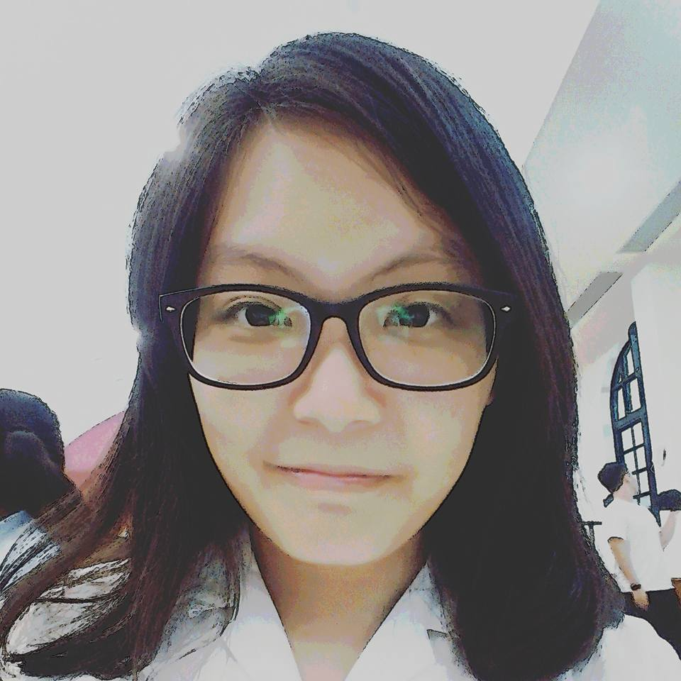

1996

LIN CHING
LIN CHING
Illustrator / Designer
1996，射手座
19歲 平凡的大學生
目前就讀於國立臺北教育大學 數位科技設計學系
專長 : 手繪插圖，電腦繪圖，平面設計
一直以來對畫圖很有興趣，在手繪或是電繪都不斷的自我充實、練習； 平常會看一些插畫家在網路上的繪圖作品，一方面放寬眼界， 另一方面欣賞並揣摩他人作品的線條、構圖、光影、整體氣氛 以及其背後的故事…等等，很享受在觀摩他人作品的崇拜感中， 也激勵自己，成為我不斷成長的動力。
我學著在生活中尋找創作靈感和題材，鼓勵自己嘗試以往沒做過的設計 相關活動，像繪本創作、漫畫創作、貼圖創作等； 希望能突破以往在繪畫上的侷限，呈現多元化的風格特色
在未來，能運用本科系的所學相關，朝動畫設計的方向邁進。 有人告訴我:「學習你喜歡的，嘗試你想要的，挑戰你的極限」， 我以此段話為目標自我提醒並且更加努力實踐!
ABOUT ME
經歷 Experience
經歷 Experience
2012年 22屆時報廣告金犢獎
2013年 東吳吉祥物設計比賽
2014年 全國工業類科學生技藝競賽 會徵設計比賽
2014年 台北icon意象徵選
2014年 全國學生圖畫書創作比賽
2014年 全國學生美展 平面設計
證照 License
視覺傳達設計 丙級證照
印前製程 圖文組版 乙級證照
印前製程 圖文組版 丙級證照